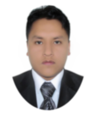
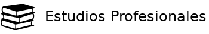

<!DOCTYPE html> <html lang="es">
 <head>
 <meta charset="utf-8">
 <link rel="Stylesheet" type="text/css" href="css/estilos.css">
 <link rel="shortcut icon" type="image/png" href="img/teamwork.png">
 <title>Curriculum Vitae</title>
 </head>
</html>
<body>
 <div id="div-1">
  <div id="div-1a">
   <div class="cuadrado abajo">
      <div id="media">
      
      <div id="nombre">STEVE PUENTE BLANCO</div>
      <div id="subtitulo">EGRESADO DE INGENIERIA DE SISTEMAS Y COMPUTACION</div>
      </div>
   </div>
   <div id="media2">
      
   </div>
   <div id="con">
    <table>
      <tr>
        <td id="nom"><strong>Nombre </strong></td>
        <td> Steve Puente Blanco</td>
      </tr>
      <tr>

      </tr>
      <tr>

      </tr>
      <tr>
        <td id="nacional"><strong>Nacionalidad </strong></td>
        <td> Peruana</td>
      </tr>
    </table>
   </div>
   <hr>
   <div id="media3">
     
   </div>
   <div id="con2">
    <table id="tabla">

       <tr>
         <td><strong>Correo </strong></td>
         <td id="correo"> stevejesuspuenteblanco@gmail.com</td>
       </tr>

    </table>
   </div>
   <hr>
   <div id="media4">
     
   </div>
   <div>
    <ul>
      <li><a href="files/desa_telecom.pdf">Desarrollo de las Telecomunicaciones,
        las Antenas y la Salud(Noviembre 2016).</a></li>
        <li><a href="files/desa_telecom.pdf">Desarrollo de las Telecomunicaciones,
          las Antenas y la Salud(Noviembre 2016).</a></li>
          <li><a href="files/desa_telecom.pdf">Desarrollo de las Telecomunicaciones,
            las Antenas y la Salud(Noviembre 2016).</a></li>
            <li><a href="files/desa_telecom.pdf">Desarrollo de las Telecomunicaciones,
              las Antenas y la Salud(Noviembre 2016).</a></li>
              <li><a href="files/desa_telecom.pdf">Desarrollo de las Telecomunicaciones,
                las Antenas y la Salud(Noviembre 2016).</a></li>
                <li><a href="files/desa_telecom.pdf">Desarrollo de las Telecomunicaciones,
                  las Antenas y la Salud(Noviembre 2016).</a></li>
                  <li><a href="files/desa_telecom.pdf">Desarrollo de las Telecomunicaciones,
                    las Antenas y la Salud(Noviembre 2016).</a></li>
                    <li><a href="files/desa_telecom.pdf">Desarrollo de las Telecomunicaciones,
                      las Antenas y la Salud(Noviembre 2016).</a></li>
                      <li><a href="files/desa_telecom.pdf">Desarrollo de las Telecomunicaciones,
                        las Antenas y la Salud(Noviembre 2016).</a></li>
                        <li><a href="files/desa_telecom.pdf">Desarrollo de las Telecomunicaciones,
                          las Antenas y la Salud(Noviembre 2016).</a></li>
     <li><a href="files/desa_telecom.pdf">Desarrollo de las Telecomunicaciones,
     las Antenas y la Salud(Noviembre 2016).</a></li>

     

   </ul>
   </div>
  </div>
  <div id="div-1b">
   <div id="media5">
     
   </div>
   <ul class="parte2">
     <li><a href="files/consta_egre.pdf"><strong>Egresado de Ingenieria de Sistemas y Computación
     </strong><br>Universidad Nacional Daniel Alcides Carrión<br><font
      size="2.5">Egresado de la facultad de Ingenieria de Sistemas y Computación
      </font></a></li>
      <li><a href="files/consta_egre.pdf"><strong>Egresado de Ingenieria de Sistemas y Computación
      </strong><br>Universidad Nacional Daniel Alcides Carrión<br><font
       size="2.5">Egresado de la facultad de Ingenieria de Sistemas y Computación
       </font></a></li>
       <li><a href="files/consta_egre.pdf"><strong>Egresado de Ingenieria de Sistemas y Computación
      </strong><br>Universidad Nacional Daniel Alcides Carrión<br><font
       size="2.5">Egresado de la facultad de Ingenieria de Sistemas y Computación
       </font></a></li>
       <li><a href="files/consta_egre.pdf"><strong>Egresado de Ingenieria de Sistemas y Computación
      </strong><br>Universidad Nacional Daniel Alcides Carrión<br><font
       size="2.5">Egresado de la facultad de Ingenieria de Sistemas y Computación
       </font></a></li>
       <li><a href="files/consta_egre.pdf"><strong>Egresado de Ingenieria de Sistemas y Computación
      </strong><br>Universidad Nacional Daniel Alcides Carrión<br><font
       size="2.5">Egresado de la facultad de Ingenieria de Sistemas y Computación
       </font></a></li>
       <li><a href="files/consta_egre.pdf"><strong>Egresado de Ingenieria de Sistemas y Computación
      </strong><br>Universidad Nacional Daniel Alcides Carrión<br><font
       size="2.5">Egresado de la facultad de Ingenieria de Sistemas y Computación
       </font></a></li>
       <li><a href="files/consta_egre.pdf"><strong>Egresado de Ingenieria de Sistemas y Computación
      </strong><br>Universidad Nacional Daniel Alcides Carrión<br><font
       size="2.5">Egresado de la facultad de Ingenieria de Sistemas y Computación
       </font></a></li>
       <li><a href="files/consta_egre.pdf"><strong>Egresado de Ingenieria de Sistemas y Computación
      </strong><br>Universidad Nacional Daniel Alcides Carrión<br><font
       size="2.5">Egresado de la facultad de Ingenieria de Sistemas y Computación
       </font></a></li>
     
   </ul>

   <hr class="p2">
   <div id="media6">
    
   </div>
   <ul class="parte3">
     <strong>Modulos Tecnicos</strong>
     <li><a href="files/tecnico_ofi.pdf">Técnico en Ofimática - SENATI (2011-2013)<br>
     <font size="2.5">Conocimientos básicos y avanzados de todo el paquete de programas<br>
     informáticos Microsoft: Word, Power Point, Excel, Access, Outlook y <br>Project.</font></a></li>
	 <li><a href="files/tec_insyrep.pdf">Técnico en reparación de equipo de cómputo - Fundación Carlos Slim<br>
	 <font size="2.5">Conocimientos tecnicos para la reparacion y instalacion de equipos de computo.</font></a></li>
   <li><a href="files/tec_seguridad.pdf">Tecnico en seguridad informatica(analisis de riesgos) - <br>
     Fundación Carlos Slim (2017)<br>
     <font size="2.5">Conocimientos de posibles riegos y amenazas en el tratamiento de <br>
     información vital para la empresa o institucion usando buenas practicas<br>
     para el tratamiento de la información.</font></a></li>
   </ul>
   <ul class="parte4">
     <strong>Cursos Generales y de Especialización</strong>
	 <li><a href="files/certi_gnulinux.pdf">Iniciando en GNU/LINUX (2020)<br>
	 <font size="2.5">
	  Curso de conocimientos basicos para la instalacion <br> y mantenimiento de sistemas GNU/LINUX</font></a></li>
     <li><a href="files/enterprise_pent.pdf">Enterprise Pentesting - Backtrack Academy (2018)<br>
     <font size="2.5">Conocimientos Básicos de obtencion de información sensible a nivel<br>
     empresarial utilizando herramientas de software libre. </font></a></li>
     <li><a href="files/asesor_nube.pdf">Asesor de servicios de infraestructura en la nube - <br>
     Fundación Carlos Slim (2018)<br>
     <font size="2.5">Conocimientos de tipos de servidores de acuerdo a la demanda que<br>
     posee el cliente servidores gestionados desde una plataforma web.
     </font></a></li>
     <li><a href="files/certificado_nube.pdf">Administador de la nube - Fundación Carlos Slim (2018)<br>
     <font size="2.5">Comicimientos del manejo y la creacion de servidores a nivel virtual <br>
     desde la plataforma web.</font></a></li>
     <li><a href="files/dragonjar.pdf">Realizando un Pentesting con la metodologia DragonJAR<br>
     - DragonJar México (2017)<br>
     <font size="2.5">Conocimientos de etapas de pentesting para vulnerar la seguridad de la<br>
     información de una empresa o a nivel de una organización.</font></a></li>
     <li><a href="files/cloud_computing.pdf">Curso de Cloud Computing - Activate España (2016)<br>
     <font size="2.5">Conocimientos básicos de todo acerca de computacion en la nube<br>
     y cual es su manejo óptimo.</font></a></li>
	 <li><a href="files/cert_finder.pdf">Certificado de Finder (2020)<br>
	 <font size="2.5">Certificacion realizada para realizar busquedas <br>
	 personalizadas documentando estrategicamente según fuentes.</font></a></li>
     <li><a href="files/soporte_tecnico.pdf">Fundamentacion de Ensamble y Mantenimiento de<br>
     Computadores para los procesos de soporte tecnico <br>- CEAI (2013)<br>
     <font size="2.5">Capacitado para realizar el ensamblaje y mantenimiento de<br>
     computadores implementando procesos de soporte tecnico.
     </font></a></li>
     <li><a href="files/funda_tec.pdf">Fundamentacion de Ensamble y Mantenimiento de<br>
     Computadores para los procesos de soporte tecnico <br>- SENA (2013)<br>
     <font size="2.5">Conocimientos base de electronica y fundamentos de ensamblaje<br>
     para dar soporte tecnico y reparacion de computadores.</font></a></li>

     <li><a href="files/tecnicas_pro.pdf">Técnicas de Programacion Nivel Básico - IAAC (2013)<br>
     <font size="2.5">Conocimiento de Tecnicas programacion basica aplicado a cualquier<br>
     lenguaje de programacion.</font></a></li>
     <li><a href="files/pascal_ide.pdf">Free Pascal IDE nivel Basico - IAAC (2013)<br>
     <font size="2.5">Conocimientos de sintaxis del lenguaje Free Pascal.</font></a></li>

     <li><a href="files/RRHH.pdf">Recursos Humanos</a></li>
     <li><a href="files/dni.pdf">DNI</a></li>
     <li><a href="files/CV.pdf">CV Completo 17/11/2021</a></li>
     <li><a href="files/CV-COMP.pdf">CV Completo(COMPRIMIDO) 17/11/2021</a></li>

   </ul>
  </div>
 </div>
</body>
</html>
